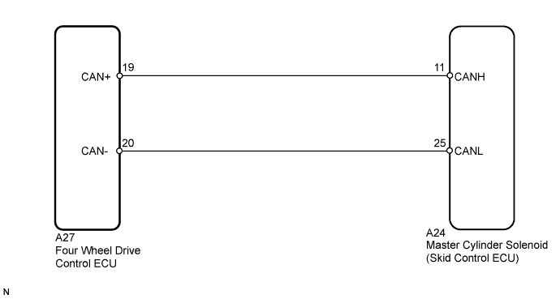

DTC C1268/68 Transfer "L4" Position Switch Circuit |
| DTC Code | DTC Detection Condition | Trouble Area |
| C1268/68 | The skid control ECU receives an L4 abnormal status signal from the four wheel drive control ECU. |
|

| 1.CHECK CAN COMMUNICATION LINE |
Turn the engine switch off.
Connect the intelligent tester to the DLC3.
Turn the engine switch on (IG) and the intelligent tester on.
Select "Bus Check" from the System Selection Menu screen, and follow the prompts on the screen to inspect the CAN Bus.
| Result | Proceed to | |
| "Bus Check" indicates no malfunctions in CAN communication | A | |
| "Bus Check" indicates malfunctions in CAN communication | LHD | B |
| RHD | C | |
|
| ||||
|
| ||||
| A | |
| 2.CHECK DTC (CAN COMMUNICATION SYSTEM) |
Turn the engine switch off.
Connect the intelligent tester to the DLC3.
Turn the engine switch on (IG) and the intelligent tester on.
Check for DTCs (LHD: Click here/RHD: Click here).
| Result | Proceed to | |
| CAN system DTC is not output | A | |
| CAN system DTC is output | LHD | B |
| RHD | C | |
|
| ||||
|
| ||||
| A | ||
| ||